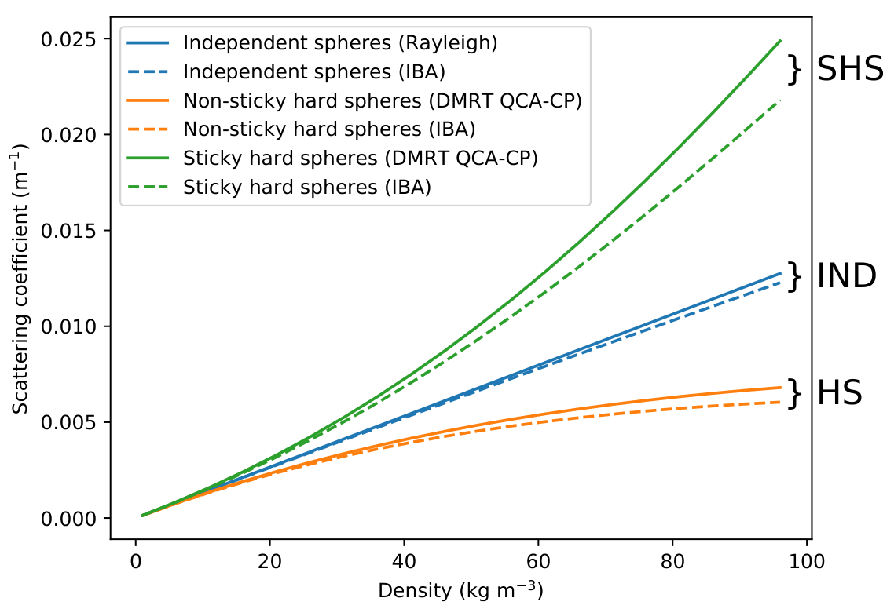
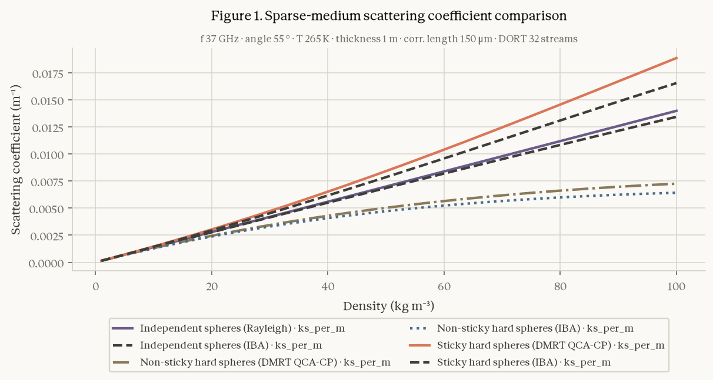

An agent for physics-based Earth models, and the protocol that scores whether its runs can be trusted. Demonstrated end to end on SMRT, a snow microwave model.
Ask for snow denser than ice and the model still returns a smooth, plausible curve. Nothing crashes, nothing warns.
So the question is not whether an agent can call a model. It is whether its run can be trusted.
accuracy of code agents on UnivEARTH
of generated code does not even run
Call trained networks, e.g. SAR to flood extent. The model is learned from data.
Trust gap: a black box with no declared physics.
Write and run code for each task. Flexible, but brittle and silent when wrong.
Trust gap: library defaults, out-of-range values, overstated accuracy.
Runs registered radiative-transfer, hydrology and land-surface models that encode processes. Ranges and legal settings are declared, not guessed.
Trust by construction, then by score.
Goal 1 · reproduce published model experiments
Goal 2 · run new experiments you can trust
Is the model what its card says, and does the system enforce it?
Card valid · adapter equals the authors’ code · illegal calls refused · human approval
Does the run match the paper, and does it name what it assumed?
Execution · figure judge · numeric error · provenance · report judge · vs baselines
What does a trusted run cost in time, tokens and effort?
Minutes · tokens · LLM calls · approvals · user experience
We do not ask you to trust the LLM. We ask you to read the gates and recompute the scores.
A model’s capability lives in its card: ranges, legal pairs, output bounds. Not in code the LLM writes.
A human approves the whole experiment before anything runs. Unstated values are labelled, not hidden.
Gates before the run, after it and at the answer, plus an external rubric. No self-scoring.
Sections read, result handles and provenance carry across turns, so claims stay traceable.
EE Genie makes the LLM a better programmer. PhysEarth makes it a checked operator of trusted models.
Model card + adapter; paper by DOI or file, licence-gated.
Opens sections and the figure’s axes and legend; each parameter’s source is labelled.
Range and pairing validation, human approval, output QC, results as handles.
Chart from a spec beside the paper’s figure; citation gate; declared outcome; rubric.
Failure → fix the general mechanism → regression test → human approval → re-score.
Step 4 is human-gated, so it is not recursive self-improvement. The rule: never write the answer into the task, the card or the prompt.
paper sections, figures
runs and charts, capability check
ranges, legal pairs
a human, never the agent
adapter; the LLM gets a handle
declared output bounds
declarative spec over handles
every marker must resolve
21 tools. Ablation switches remove a gate from a YAML file, never from a prompt, so the same gate can be switched off to measure what it buys.
model_card.yaml
parameter ranges, legal pairs, output bounds
adapter.pyrun(spec) around the upstream package
Check: python -m physearth.registry.check
Load: PHYSEARTH_MODEL_PATH
checks pass · 0 LLM calls · deterministic
| Eval | Question | Evidence it shows |
|---|---|---|
| A1 Card | Is the declaration legal? | 7/7: six registered cards pass; one deliberately broken card is rejected before registration |
| A2 Adapter | Does it compute what the authors’ code computes? | 9 tasks, 38 checks; SMRT matches upstream to nine decimals; closed-form identities hold for tau-omega and water cloud |
| A3 Guards | Does the system enforce the card? | 4/4: a run succeeds · an identical replay hashes the same · an out-of-range call is refused before it runs · a run is blocked until a human approves |
| Probe | Does the agent respect it? | Density 2000 kg/m³ is declined, citing the card’s 917 kg/m³ bound, instead of returning a curve |
models/examples/toy_model · tasks evaluation/tasks/tier0 · Done| Score | Question it answers | How it is scored | Status |
|---|---|---|---|
| Execution rate | Did the run finish? | Completed vs stopped by a stop rule | Done |
| Figure: visual judge | Same curves, order, grouping as the paper? | Label-blinded judge, four dimensions scored 0–2; pass needs line count and patterns at 2 | Done |
| Figure: numeric error | How far from the authors’ own code? | Normalised RMSE on the notebook grid, as the agent chose and with the notebook’s settings | 1 wk |
| Provenance | Which values were assumed? | Each parameter labelled; labels cross-checked against defaults the system recorded | labels check 1 wk |
| Report judge | Is the write-up true and calibrated? | Rubric dimensions scored 0–2; factuality must be 2; outcome declared as reproduced, partial, not identifiable or failed | Done |
| Safety | Illegal calls executed? False premise caught? | Recomputed from the card, whether or not a gate was on | Done |
Every metric is recomputed from the recorded run, never from what the harness decided at the time. Other agent benchmarks (ThinkGeo, Earth-Bench) score tool choice and final answer; this adds configuration fidelity and parameter provenance.
| Comparator | What changes | What it tells you | Status |
|---|---|---|---|
| Direct LLM | Same Qwen and tools, harness switched off | What the gates buy on one model | re-run 1 wk |
| Other LLMs | DeepSeek, GLM, GPT-5.5 with the harness | Whether the checks depend on a strong model | 1 wk |
| Claude Code, Codex | Raw coding agent on the same question, then the same agent with our plugin | Flexibility versus silent failure; what the plugin adds | Later |
illegal calls executed, with the harness vs without
citations that resolve, with vs without
Compare only identical task, prompt profile and build. Old records stay for audit and are never pooled.
Q1, harness on, qwen-plus
0.65–0.74M, full pipeline
26–28 observed


runs produced the figure
visual judge, each run
curves within 3–4% of the authors’ notebook
Not pixel-identical, and not meant to be: the judge ignores style. The two sticky curves are about 12% off because the paper never states stickiness.
Pilot: Q1 only, qwen-plus, judge claude-opus-5, three repeats. Main experiment with the direct LLM, robustness across LLMs, and Fig. 4a/4b are the next week’s runs 1 wk
Register toy_model, an out-of-range call is refused with the card’s reason, then a cited run.
Ask Q1. The approval gate holds, then a figure and a cited answer.
A 10-second cut of the same tools: one server, three hosts.
register · plan · validate · run · verify
Today humans register models and the agent configures and runs them. Next the agent may write or revise physics code, such as a MEMLS adapter or a revised snow-density scheme, but only through the same contract:
card · conservation and reference checks · regression test · human approval
“Declare, don’t code” becomes “code only through the contract.”
Read the gates. Recompute the scores. Register your own model and test it the same way.
| Task | Verdict | Why |
|---|---|---|
| Q1 · SMRT Fig. 3 | Can run | Run end to end; figure in 3/3 pilot runs |
| Fig. 4a / 4b · SMRT curves | Should run | Paper states the configuration; tasks exist; not yet executed |
| Fig. 5 · IBA with sticky spheres | Should run | All SMRT pieces registered; not yet executed |
| Fig. 4 comparison models | Cannot | DMRT-QMS and DMRT-ML are not registered |
| Fig. 6 · against MEMLS | Cannot | Needs MEMLS; SMRT side only |
| PROSAIL hybrid inversion | Cannot | PROSAIL is forward-only |
| Trail Valley Creek, model vs measurement | Should run | Dataset and SMRT both bundled; not yet scored |
| Q2, Q3, Q4 in the competition spec | Undefined | Only Q1 has a task file; Q3 names MEMLS |
| Agent | Tools | Similar to ours | Lacks |
|---|---|---|---|
| RS-Agent 2406.07089 | 18 specialist RS models | Solution and knowledge space ≈ method notes and corpus | Pre-run validation, approval, provenance |
| GeoGPT 2307.07930 | LangChain GIS tool pool | Predefined tool pool | Physical models, checks |
| GeoAgent 2410.18792 | Code interpreter, RAG, MCTS refinement | RAG, error recovery | Writes code; no physical bounds |
| ThinkGeo 2505.23752 | Benchmark: 14 tools, 486 tasks | Step-wise and final-answer scoring | No configuration or provenance scoring |